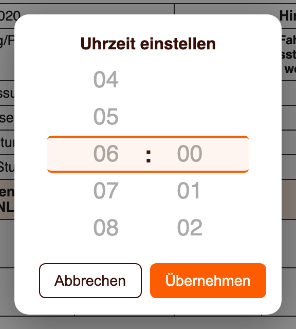
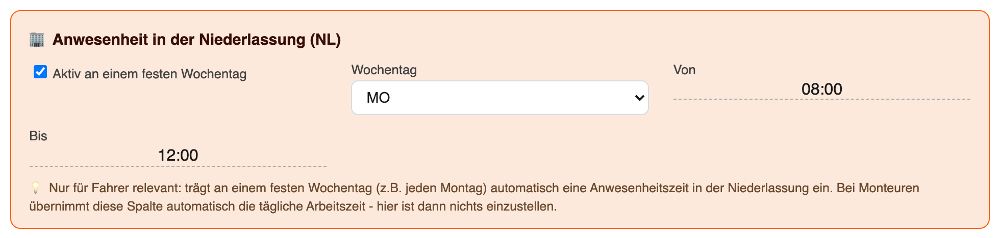
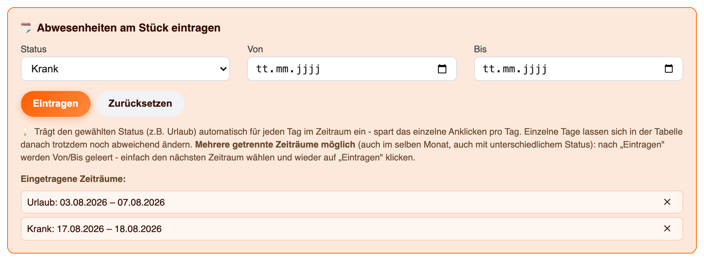
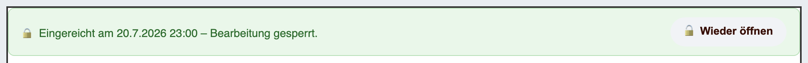
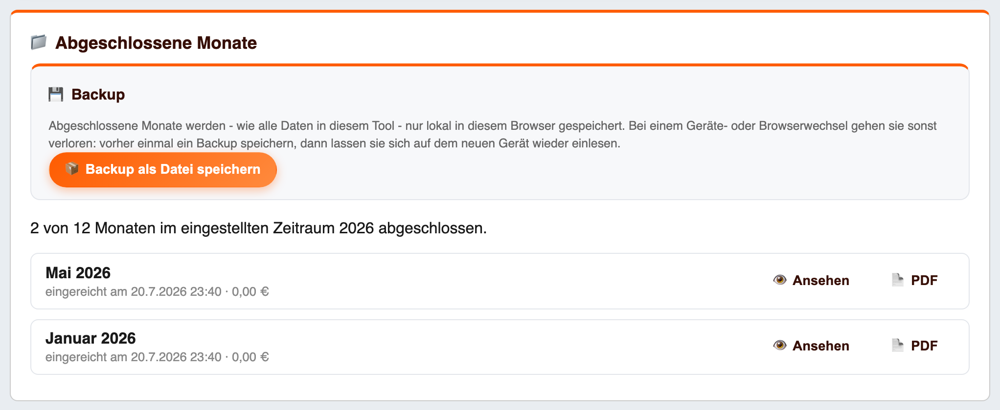

Kurze Schritt-für-Schritt-Anleitung, wie der Spesennachweis ausgefüllt wird.
Alles läuft im Browser, nichts muss installiert werden.
Beim allerersten Öffnen erscheint automatisch ein kurzer 4-Schritte-Einrichtungsassistent
(Name, Straße/Ort/Niederlassung, Fahrer/Monteur, Bundesland) - alles darin lässt sich später in den
Einstellungen jederzeit ändern. Nach dem letzten Schritt öffnen sich automatisch die Einstellungen,
um das Dokument gleich fertigzustellen (z.B. E-Mail-Adresse des Arbeitgebers, Pauschalen, Standard-Zeiten).
🎬 Video-Anleitung (ca. 8 Min.)
Zeigt den kompletten Ablauf einmal von vorne bis hinten – mit gesprochener
Erklärung. Wer lieber liest, findet darunter jeden Schritt einzeln mit Bild.
1. Werkzeugleiste
Oben im Tool gibt es die Werkzeugleiste mit Monats- und Sprachauswahl:
💾 Als PDF speichern – lädt den fertigen Spesennachweis als PDF-Datei herunter
🖨️ Drucken – öffnet den normalen Druckdialog
📧 Per E-Mail an Arbeitgeber weiterleiten – speichert die PDF, öffnet eine vorausgefüllte E-Mail
und markiert den Monat automatisch als eingereicht (siehe Schritt 10)
🔒 Monat abschließen – markiert den Monat manuell als eingereicht/gesperrt, auch ohne E-Mail-Versand
(z.B. wer stattdessen ausdruckt und persönlich abgibt) - siehe Schritt 10
📄 CSV-Export – exportiert die Monatsdaten zusätzlich als CSV-Datei (z.B. für die Buchhaltung)
Monteur – trägt stattdessen „Arbeitsbeginn" / „Arbeitsende" ein; die „Anwesenheit NL" wird automatisch
aus dieser Zeitspanne übernommen, und 30 Minuten Pause werden automatisch abgezogen (mit „*" markiert)
Danach Name, Straße, Ort, Niederlassung und – falls gewünscht – die E-Mail-Adresse des Arbeitgebers eintragen
(nur nötig für den „Per E-Mail weiterleiten"-Button). Bundesland auswählen, damit Feiertage automatisch stimmen.
Tipp: Wer jeden Tag zur gleichen Zeit anfängt/aufhört, kann das oben bei „Abfahrt WP (Standard)" /
„Ankunft WP (Standard)" (bzw. „Arbeitsbeginn/Arbeitsende" bei Monteuren) einmal eintragen – das füllt dann
automatisch alle Wochentage aus. Einzelne Tage lassen sich unten in der Tabelle trotzdem jederzeit ändern.
Alle Eingaben werden nur lokal im eigenen Browser gespeichert – nichts wird hochgeladen.
3. Tageszeiten eintragen
Zurück zur Tabelle (Einstellungen einfach nochmal anklicken zum Schließen). Für jeden Arbeitstag auf das
Uhrzeit-Feld in der Zeile Abfahrt WP (bzw. Arbeitsbeginn) bzw. Ankunft WP (bzw. Arbeitsende)
tippen/klicken. Es öffnet sich ein Dreh-Rad zur Uhrzeit-Auswahl – wie bei einer iPhone-Uhr:

Stunde und Minute lassen sich mit der Maus, dem Mausrad/Trackpad oder am Handy/Tablet mit dem Finger auf die
gewünschte Zeile schieben – die Mitte (orange umrandet) zeigt die aktuell ausgewählte Uhrzeit. Mit
Übernehmen bestätigen oder mit Abbrechen das Fenster ohne Änderung schließen.
Auch per Tastatur bedienbar: Pfeiltasten hoch/runter bewegen die ausgewählte Walze, Zahlen eintippen
springt direkt zur gewünschten Uhrzeit (z.B. „1" dann „5" für 15), Enter übernimmt, Escape
bricht ab.
Std. und Pauschale berechnen sich danach automatisch:
„Anwesenheit in NL" und „besuchte Orte" lassen sich ebenfalls anpassen, falls nötig.
⚠️ Hinweis-Symbole: Ein kleines ⚠️ neben der Uhrzeit zeigt an, dass für einen Werktag noch gar keine
Zeit eingetragen ist (einfach ignorieren, falls der Tag noch bewusst offen ist). Ein rot hinterlegtes
Std.-Feld mit ⚠️ warnt vor einer langen Arbeitszeit (über 10,5 Std.) - beides rein informativ,
blockiert nichts und erscheint nicht im Ausdruck/PDF.
4. Status auswählen
Ganz rechts in jeder Zeile steht der aktuelle Status als Text, darunter ein Auswahlmenü zum Ändern:
Arbeitstag – Standard, wenn Zeiten eingetragen sind
Urlaub, Krank, Frei, Sonderurlaub, Elternzeit – für alle anderen Tage einfach auswählen,
die Zeiten-Felder werden dann ausgeblendet
Die ganze Status-Spalte (Auswahlmenü und Text) erscheint bewusst nicht im gedruckten/gespeicherten PDF – das offizielle Spesenblatt bleibt schlank. Bei ganztägigen Einträgen wie Urlaub oder Krank steht die Info aber weiterhin mittig in der Zeile.
5. Anwesenheit in der Niederlassung (NL)
Unter ⚙️ Einstellungen im Abschnitt „🏢 Anwesenheit in der Niederlassung (NL)" lässt sich festlegen,
an welchem festen Wochentag automatisch eine Anwesenheitszeit in der Niederlassung eingetragen wird
(z.B. jeden Montag zur Teambesprechung):

Aktiv an einem festen Wochentag – Häkchen setzen, um die automatische Eintragung zu aktivieren
Wochentag – Montag bis Samstag wählbar (Samstag für die seltenen Fälle, in denen die NL-Anwesenheit
auf einen Samstag fällt; Sonntag ist bewusst nicht dabei)
Von / Bis – die Uhrzeit der Anwesenheit, per Dreh-Rad einstellbar (siehe Schritt 3)
Diese Einstellung ist nur für Fahrer relevant. Bei Monteuren übernimmt die
Spalte „Anwesenheit NL" automatisch die tägliche Arbeitszeit - hier ist dann nichts einzustellen.
6. Abwesenheiten am Stück eintragen
Statt Urlaub, Krankheit o.ä. Tag für Tag einzeln umzustellen (Schritt 4), lässt sich das auch für einen
ganzen Zeitraum auf einmal erledigen: unter ⚙️ Einstellungen im Abschnitt „Abwesenheiten am Stück
eintragen" Status, Von- und Bis-Datum wählen und auf „Eintragen" klicken:
Der Zeitraum darf auch über mehrere Wochen oder Monate gehen. Einzelne Tage darin lassen sich in der Tabelle
trotzdem noch abweichend ändern.
Mehrere getrennte Zeiträume möglich: nach „Eintragen" werden Von/Bis automatisch geleert (der Status
bleibt stehen) - so lässt sich direkt danach ein zweiter, unabhängiger Zeitraum eintragen, auch im selben
Monat und auch mit einem anderen Status (z.B. erst eine Woche Urlaub, danach zwei Tage Krank). Darunter
erscheint eine Liste aller aktuell eingetragenen Zeiträume, die sich einzeln über das ✕ wieder
entfernen lassen:

7. Unterschreiben
Ganz unten im Formular gibt es zwei Unterschriftenfelder (Mitarbeiter und Niederlassungsleiter). Einfach mit
der Maus oder am Handy/Tablet mit dem Finger hineinzeichnen:
Die Unterschrift wird automatisch gespeichert und bleibt für alle künftigen Monate erhalten – man muss nicht
jeden Monat neu unterschreiben. Über das kleine ✕ oben rechts im Feld lässt sie sich löschen und neu zeichnen.
Unter jeder Unterschrift erscheint automatisch „unterschrieben am TT.MM.JJJJ um HH:MM" -
das gibt der Unterschrift echten Beweischarakter und wird auch mit ins PDF übernommen.
8. Jahresübersicht
Über den Button 📊 Jahresübersicht in der Werkzeugleiste lässt sich der komplette Jahresverlauf auf
einen Blick einsehen: ein Balkendiagramm der Pauschale je Monat, dazu Arbeitstage und Pauschale-Summe je
Monat sowie die Anzahl der Urlaubs-, Krankheits-, Sonderurlaubs- und Elternzeit-Tage – mit Gesamtzeile
fürs ganze Jahr:
9. Datensicherung
Da alle Daten ausschließlich lokal im eigenen Browser gespeichert werden (siehe Datenschutz-Hinweis in
Schritt 2), gehen sie beim Löschen des Browser-Verlaufs oder einem Gerätewechsel sonst unwiderruflich
verloren. Unter ⚙️ Einstellungen im Abschnitt „💾 Datensicherung":
Backup als Datei speichern – sichert alles (Einstellungen, alle Monate, beide Unterschriften) als Datei
Backup wiederherstellen – liest eine zuvor gespeicherte Backup-Datei wieder ein, auch auf einem
anderen Gerät oder Browser
Empfehlung: regelmäßig ein Backup speichern, z. B. einmal im Monat – besonders
vor dem Klick auf „🗑️ Zurücksetzen".
10. Monat abschließen
Sobald ein Monat fertig ausgefüllt und eingereicht ist, lässt er sich sperren - das verhindert versehentliches
Nachbearbeiten. Das passiert automatisch beim Klick auf 📧 Per E-Mail an Arbeitgeber weiterleiten,
oder manuell über 🔒 Monat abschließen (z.B. wer stattdessen ausdruckt und persönlich abgibt):

Ein grüner Banner zeigt Datum und Uhrzeit der Einreichung, alle Zeitfelder/Status/Orte-Eingaben in der
Tabelle sind währenddessen gesperrt (leicht abgeblendet). Über 🔓 Wieder öffnen im Banner lässt sich
der Monat jederzeit wieder zur Bearbeitung freigeben.
11. Abgeschlossene Monate
Über 📁 Abgeschlossene Monate in der Werkzeugleiste lässt sich jederzeit einsehen, welche Monate
bereits eingereicht wurden - über alle Jahre hinweg, nicht nur den aktuell eingestellten Zeitraum:

Jeder Monat zeigt die Gesamtpauschale und den genauen Einreichungs-Zeitpunkt
👁️ Ansehen springt direkt zu diesem Monat (wechselt bei Bedarf automatisch Jahr/Zeitraum)
📄 PDF zeigt den Monat an und lädt sofort erneut die PDF herunter
Wichtig bei Gerätewechsel: Abgeschlossene Monate sind - wie alle Daten in diesem Tool - nur lokal in
diesem Browser gespeichert. Direkt in diesem Panel gibt es deshalb auch den Button 📦 Backup als Datei
speichern (identisch zu Schritt 9) - vor einem Geräte- oder Browserwechsel unbedingt nutzen, damit
vergangene Monate nicht verloren gehen.
12. Fertigstellen
Wenn der Monat komplett ausgefüllt ist:
💾 Als PDF speichern klicken, um die fertige Datei herunterzuladen, oder
📧 Per E-Mail an Arbeitgeber weiterleiten klicken – die PDF wird automatisch heruntergeladen und
eine E-Mail mit Betreff/Text vorausgefüllt geöffnet. Die heruntergeladene PDF muss dort nur noch angehängt
werden (das kann der Browser aus Sicherheitsgründen nicht automatisch). Der Monat wird dabei automatisch
als eingereicht markiert (siehe Schritt 10).
Optional zusätzlich 📄 CSV-Export, falls die Zahlen z.B. von der Buchhaltung weiterverarbeitet werden sollen.